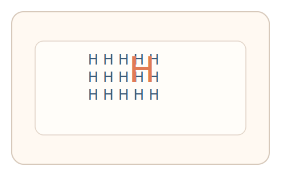
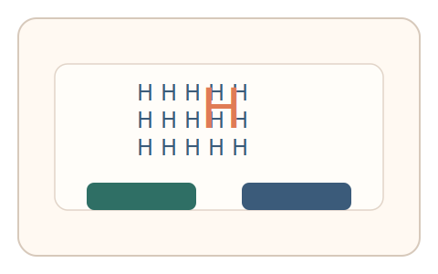
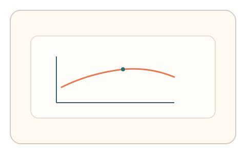

#52
视觉思考范式：扫描/错觉/全局-局部
已扩展
全局‑局部优先偏置
展示 Navon 图形并让用户判断第一眼看到的大字母或小字母，利用全局/局部优先性验证真实性。
概念原文
展示由小元素拼成的大字母（Navon 图形），要求用户快速选择“你第一眼看到的是大字母还是小字母”；记录反应时与选择偏向。
依赖人类全局/局部知觉优先性差异，而非图形识别难度。
研究背景
Navon 图形显示人类常对全局形状具有优先加工倾向，但个体与情境差异可导致局部优先。通过记录选择偏向与反应时，可形成稳定的知觉特征。
核心机制
- 展示由小元素组成的大字母图形。
- 用户选择第一眼注意到的是全局还是局部。
- 记录反应时与选择偏向。
- 分析全局/局部优先性分布。
用户流程
- 步骤 1：用户看到 Navon 图形。
- 步骤 2：用户选择全局或局部优先。
- 步骤 3：系统分析反应与偏向。
判定信号
全局/局部选择偏向
人类存在稳定的全局优先或局部优先倾向。
反应时分布
全局优先通常伴随更快的初始反应。
判定逻辑
结合选择偏向与反应时分布判定；反应过快且无偏向或随机化判异常。
对抗面
- 脚本固定选择某一选项
- 重放真实用户的选择序列
防御与缓解
- 随机化字母组合与大小比例
- 引入轻微噪声与位置抖动
- 叠加鼠标轨迹与微时序信号进行多信号验证
可达性与风险
提供更大字号或替代任务模式，避免对视力较弱用户造成负担。
- 文化与阅读习惯影响局部优先性
- 屏幕尺寸影响全局感知
可视化状态

状态 1：Navon 图形
大字母由小字母组成。

状态 2：优先选择
选择全局或局部优先。

状态 3：偏置判定
统计偏向与反应时。
参考资料
Navon figures
说明全局与局部优先加工现象。
Global precedence
说明全局优先效应与反应时差异。